, of the parameters to be estimated:
, of the parameters to be estimated:In mathematical terms, we want to minimise some measure 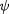 of the variance-covariance matrix, , of the parameters to be estimated:
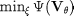
The experiment decision variables 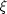 may be subject to equality or inequality constraints:
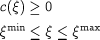
The variance-covariance matrix is of the form:
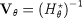
The information matrix 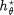 is a 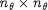 matrix, where 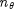 is the number of parameters to be estimated, . It is given by
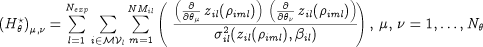
The symbols in these equations have the following definitions:
| 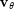 | The variance-covariance matrix of the parameters to be estimated. |
| 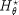 | & The information matrix of the parameters to be estimated. |
| The set of experiment decision variables in all experiments. | |
| 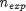 | The number of experiments. |
| 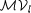 | The set of measured variables in experiment l, i.e. 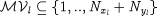 |
| 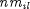 | The number of sampling points for measured variable i in experiment l, 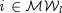 . |

|
The m-th measurement time for variable i in experiment l. |
| 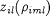 | The model-predicted value of variable i at time point in experiment l. |
| 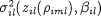 | The variance of the measurement error of variable i at time point  in experiment l. in experiment l. |
Equipment design and resource availability may impose certain operational and safety limits within which our control manipulations should be maintained. Experiment Design seeks to provide answers to the following questions
What should be the initial conditions for the experiment?
How long should we run the experiment for?
How should we vary the controls (e.g. the time profiles of feed flowrates and external heating/cooling loads)?
When should we take the measurement samples?
The overall aim is to generate the maximum amount of information for a subsequent estimation of the parameters ( 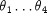 ) using gPROMS' Parameter Estimation facilities, while trying to maintain the process within the required operating envelop.
In order to compare the magnitude of different variance-covariance matrices, various real-valued functions have been suggested as a measure of "smallness". gPROMS supports three well-known criteria:
A-optimality: minimise the trace of the variance-covariance matrix:
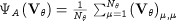
This minimises the sum of the variances of the individual parameter estimates. It corresponds to minimising the dimensions of the smallest hyper rectangle within which the confidence ellipsoid can be inscribed.
D-optimality: minimise the determinant of the variance-covariance matrix:

This is also known as the minimum volume criterion since it minimises the volume of the confidence ellipsoid.
E-optimality: minimise the largest eigenvalue of the variance-covariance matrix:
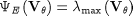
The eigenvalues of the variance-covariance matrix correspond to the lengths of the minor and major axes of the confidence ellipsoid. By minimising the largest eigenvalue, the design renders the confidence ellipsoid as spherical as possible.
The figure below shows a graphical interpretation of the different design criteria for a two-dimensional confidence ellipsoid.